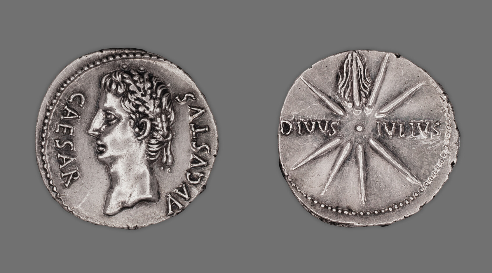
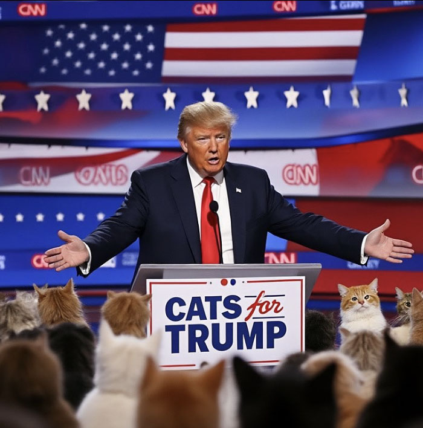

Contrast: Means of Propaganda and Control
Notwithstanding both Caesar and Trump using propaganda to obtain and maintain their power, Caesar exercised complete control over his political and public images through ways sponsored by the state. On the contrary, Trump works in a chaotic media environment where the spreading of information can be used in his favor but also against him.
Ancient World
Context: Augustus had nearly complete control over his public image because, during his rule, he was backed by the Roman state. He had a wide variety of tools at his disposal, including creating coinage, monuments, statues, and official art, the majority of which were physical and tangible objects, that he used to communicate with his supporters. There were very few forces that fought back against his narratives or control.
Evidence: The Roman state helped spread Augustus's public image through constructing public works, like coins featuring his portrait and statues portraying him as a god, and celebrated his achievements. The University of Melbourne explains that Augustus was the first person in classical antiquity to use art and public work to its full extent as a form of visual propaganda.1 Scholars further confirm that his "artistic implementation of statues, buildings and memorials allowed Augustus to achieve his personal and political goals" by embedding his image into daily Roman life.2
Augustus's utilization of propaganda was extremely effective and powerful because it was protected by the state, could be seen directly by the people of the Roman Empire daily, and celebrated his accomplishments and victories. Augustus controlled his public image officially through the state, allowing him to present himself as a peaceful, successful, and strong ruler without facing the challenges and criticism that modern political leaders, such as Trump, face.
Modern World
Context: Trump ran for office and currently rules in a much more unstable and chaotic environment compared to Augustus. On social media platforms specifically, there are vast amounts of images and messages that could have been created, altered, and fabricated by different people who are not Trump. Furthermore, AI-generated images, videos, and disinformation continue to skyrocket, creating a completely different challenge for Trump to navigate in the digital world.
Evidence: During the 2024 election, many manipulated political images and fabricated online content were spread widely through social media during the election cycle. Additionally, there were significant amounts of propaganda against Trump, which were twisted against him and sometimes even AI-generated.3 Researchers have found that these AI-generated images were designed to create "biased" portrayals of political figures, with fabricated content able to be produced and spread at large scale.4
The digital and chaotic environment during the 2024 election highlights how Trump does not have complete control over what is said in his favor or against him. Trump's situation in the age of digital media is completely different from Augustus's, as the two political leaders use different means to spread their propaganda. Augustus used physical monuments, architecture, and coinage to cement his rule, while Trump uses social media platforms to rise to power and maintain it. Furthermore, Augustus and Trump differ on the point of how much control they have over the media and propaganda that is spread. Augustus was backed by the state and had complete control over what was spread, limiting opposing voices and narratives. On the contrary, while Trump has influence on public opinion, he manipulates his public and political images through social media, where he does not have complete control, often facing opposition from rivals, such as during the 2024 election.


Summary
The coin of Augustus and the AI-generated political image from the 2024 election demonstrate how different the two political leaders' worlds were. Augustus's portrait on Roman coinage displays the state-backed control he exercised, as he was able to spread propaganda through official channels. In contrast, the AI-generated image of Trump surrounded by cats, which Trump himself generated, shows how the modern social media environment is chaotic and has images that are used to confuse and manipulate public perception. Altogether, these two images demonstrate that Augustus had complete, state-backed control over physical propaganda, while Trump operates in an environment centered around the digital media, where he does not have complete control over the media, creating a more chaotic environment.
Footnotes
- SHAPS Research Blog, "Control & the Imagery of Power: The Case of Emperor Augustus," University of Melbourne, June 28, 2021, https://blogs.unimelb.edu.au/shaps-research/2021/06/28/augustus-public-image/. ↩
- Art History Presentation Archive, "Ara Pacis Augustae (Augustus Altar of Peace)," accessed 2026, http://honorsaharchive.blogspot.com/2008/06/ara-pacis-augustae-augustus-altar-of.html. ↩
- Darrell M. West, "How Disinformation Defined the 2024 Election Narrative," Brookings Institution, November 7, 2024, https://www.brookings.edu/articles/how-disinformation-defined-the-2024-election-narrative/. ↩
- USC Viterbi School of Engineering, "Researchers Uncover an Information Operation Threatening the 2024 U.S. Presidential Election," November 4, 2024, https://viterbischool.usc.edu/news/2024/11/information-operation-threatens-the-2024-u-s-presidential-election/. ↩
- Art Institute of Chicago, "Denarius Coin Portraying Emperor Augustus," accessed 2026, https://www.artic.edu/artworks/5600/denarius-coin-portraying-emperor-augustus. ↩
- The New York Times, "How Trump Is Using Fake Imagery to Attack Enemies and Rouse Supporters," October 21, 2025, https://www.nytimes.com/interactive/2025/10/21/business/media/trump-ai-truth-social-no-kings.html. ↩